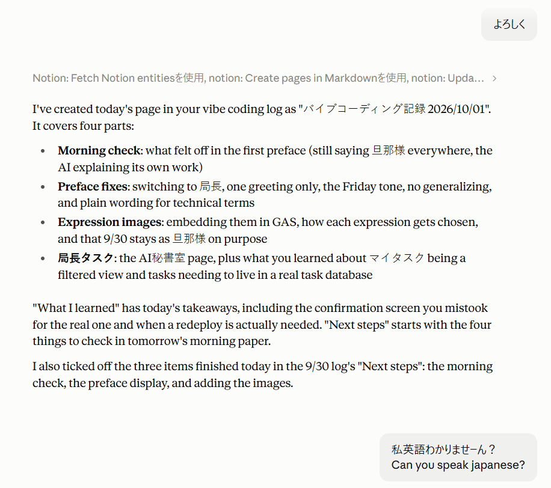

毎晩、生成AI(Claude)を使っています。バイブコーディングが終わったら、その日の作業記録をNotionにまとめてもらうのが日課です。
先日、いつも通り「よろしく」とだけ伝えて記録を頼みました。ClaudeはNotionを読みに行き、ページを作り、前日の記録も更新してくれました。仕事はきっちりです。
ところが、返ってきた報告がこれです。

全部英語。
「マイタスク」など日本語の単語は拾えるものの、説明文が英語なので、結局何をしてくれたのかがパッと分かりません。
思わず「私英語わかりませーん? Can you speak japanese?」と返してしまいました。
なぜ英語になるのか(あくまで使っていての推測です)
起きるのは、たいてい次のような場面の直後です。
- Notionなど外部ツールとのやり取りを挟んだとき
- 英語の資料やプログラムのコードを読ませたとき
- 作業が長く続いたとき
AIの裏側で行き来する指示やデータは、英語が圧倒的に多いはず。それに引っ張られて返事の言語まで切り替わる、とClaude Code自身は説明していました。本当かどうかは、AI本人にも分からないのかもしれませんが。
これが初めてではありません。週一くらいで起きます。
私の使い方では、GeminiやCopilotでこういう経験をしたことはほとんどないのですが、外部ツールとの連携をよく使っているのはClaudeなので、同じ条件での比較ではありません。
対処法
- 設定に書いておく。 Claudeの設定には、自分の好みを書いておける欄があります。そこに「回答は常に日本語で」と書いておくことにしました。効果があったかは、また報告します。
- 英語になったら、一言で戻す。 「日本語で」と返せば、すぐに日本語でやり直してくれます。
- 最初に言語を指定する。 英語の資料を渡すときは「日本語で要約して」と頼んでおけば、再発しないかなぁと期待しています。
こういうポンコツさが、生成AIに丸投げしたときの怖さですよね。
ケアレスミスが多い後輩に仕事を任せたとき、申し訳ないけど、その後輩が出してきた資料や見積書は自分でチェックする。それに近い感覚です。